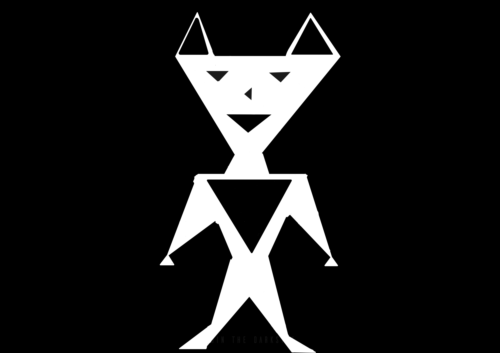

Please use a browser that supports "canvas"
Clear Canvas
Drawing Mode:
Point
Triangle
Circle
Red:
Green:
Blue:
Shape Size:
(Circles) Segement Count:
Draws a picture:
Draw
(You can change the white color to the color desired using the sliders)
Example of Picture that is going to be drawn:
